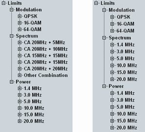

Limit Settings
The "Limits" section in the configuration dialog defines lower and/or upper limits for the modulation, spectrum and power results. Separate limits can be set for the individual modulation schemes or channel bandwidths.
For details, see "Limit Settings and Conformance Requirements".

Limit settings with and without carrier aggregation
For limit configuration via remote commands, refer to the following sections: